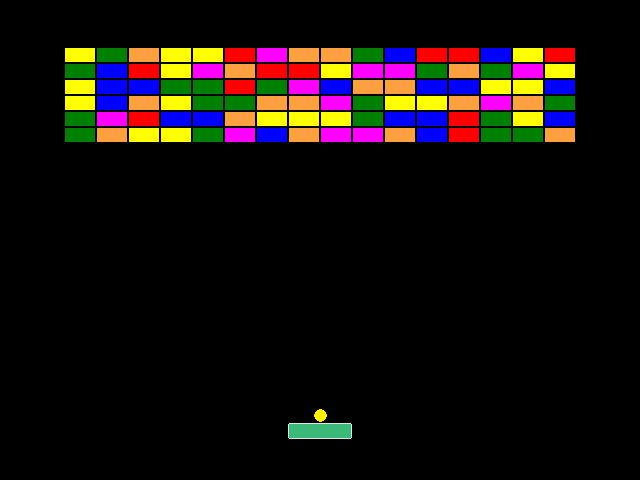
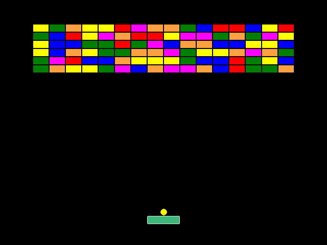
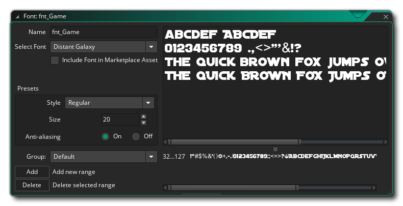
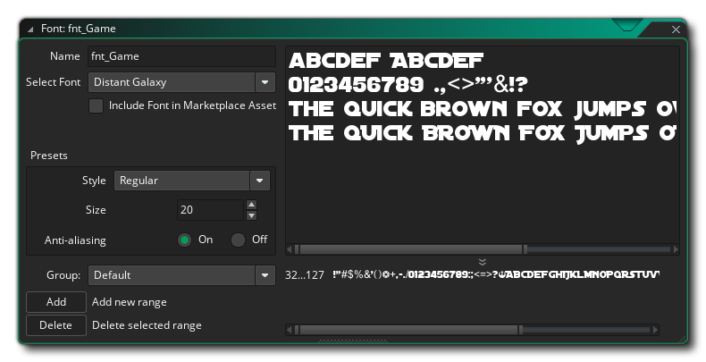
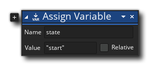
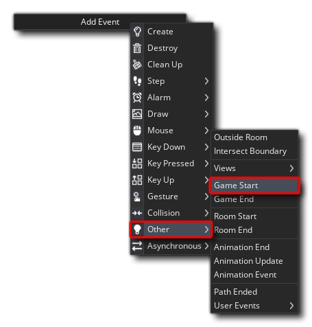
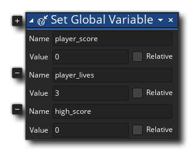
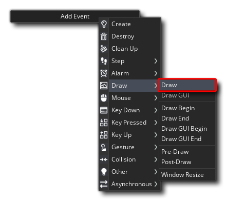
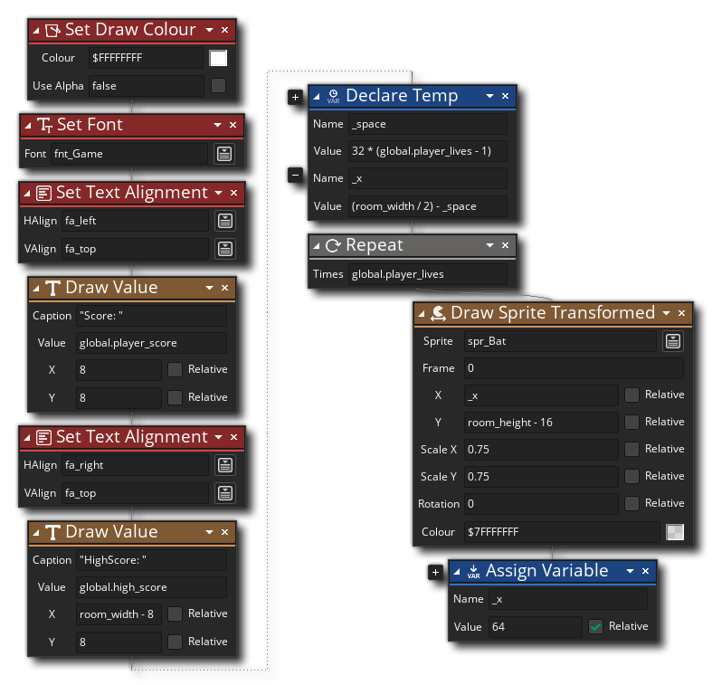

The time has come to test our game! This is the easy part as all you're required to do is press the "play" button  at the top of the GameMaker Studio 2 IDE. If all has gone correctly, your game will run and you can play it using the "Space" key and the Arrow keys:

at the top of the GameMaker Studio 2 IDE. If all has gone correctly, your game will run and you can play it using the "Space" key and the Arrow keys:

This is a great start, but it's missing a few things to make it a "complete" game - namely player lives and a score. We want the game to give you three "lives" and keep track of the score you get from each brick destroyed, so for that we are going to make a controller object (A controller object is simply an object in your game that is designed to control the things that go on in the background, and it usually doesn't have a sprite assigned to it although it can have, and it can also draw stuff independently as we'll see).
Before adding the controller however, let's add a Font resource, as we'll want our controller to draw some text to the screen later. To add a font, simply right click  on the Fonts resource and select Create Font. In the font window that opens, name the font "fnt_Game" and then select something that you think will look good, setting the size to 20 (or whatever seems appropriate for the font being used):

on the Fonts resource and select Create Font. In the font window that opens, name the font "fnt_Game" and then select something that you think will look good, setting the size to 20 (or whatever seems appropriate for the font being used):

You can close the Font editor now.
For our controller you will need to create a new object, call it "obj_Control", and then add a Create event with the following Action: 
We'll be using this variable to set the "state" of the controller so that it knows whether the game has to start, is being played, or is finished. Apart from this, we'll also use the Game Start event to initialise some global variables: 
In this event add this Action: 
These global variables will permit us to keep track of important values without having to worry about which instance of an object is accessing them or changing them, and by initialising them in the Game Start event, they will only be initialised once even if we restart the room (but if we restart the game they will be reinitialised).
We now need to draw the score and lives of the player to the screen so you'll need to add a Draw event to the object. Note that - like the Step event category - the Draw event has a number of different event types that can be used, but for this game simply use the regular Draw event (you can find out more about the different draw events from the manual): 
In this event we'll need the following Actions: 
Here we are drawing the score across the top of the room, and then a series of sprites (scaled down) to represent the player lives at the bottom.